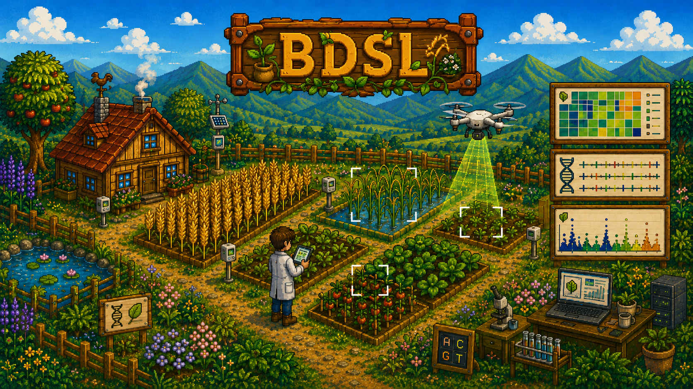

Genome evolution
Genome assembly, pangenomics, structural variation, and evolutionary and population genomics.

Kunsan National University
We study genome diversity and biological variation using genome assembly, population genomics, transcriptomics, phenomics, and data-driven methods.
Research focus
Genome assembly, pangenomics, structural variation, and evolutionary and population genomics.
Transcriptomics, pan-transcriptomics, phenomics, and integrated analysis of biological traits.
Quantitative genetics, statistical modeling, and AI-based prediction of complex biological traits.
Phenotyping, experimental evaluation, reproducible analysis pipelines, and AI for biological data.
Current projects
Deciphering carrot domestication and genome diversity through pan-genome analysis.
Identifying genetic variants and candidate genes associated with complex traits in wheat.
Identifying and removing organelle-derived contigs from genome assemblies using graph and sequence evidence.
Latest news
Appointments, publications, and laboratory updates from Kunsan National University.